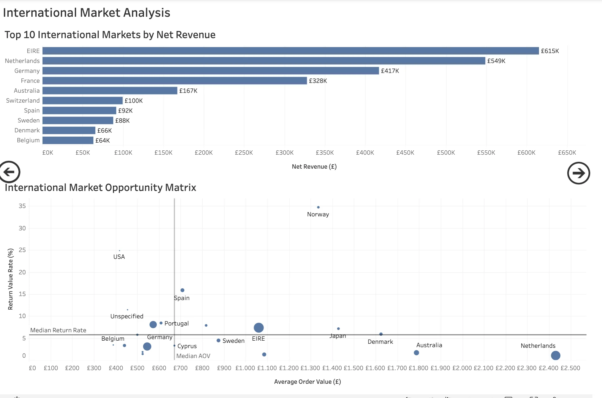
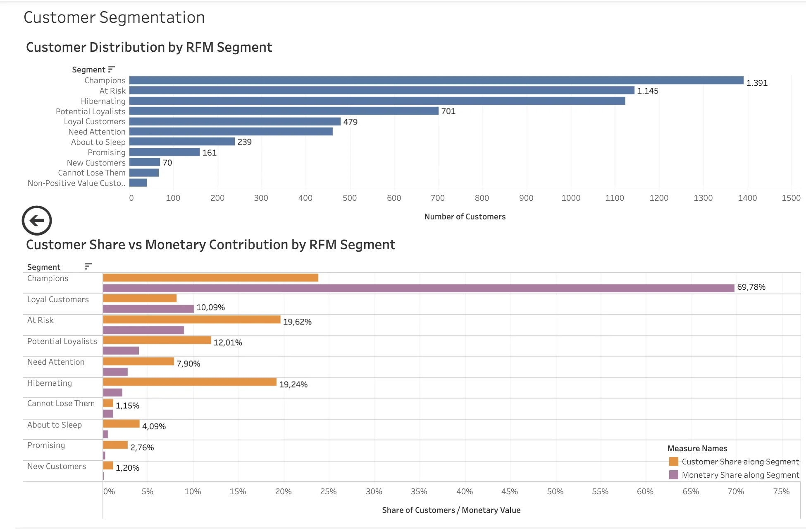

02 / DATA
E-commerce Sales Performance
A large-scale retail analysis that converts more than one million raw transaction rows into revenue, return, customer, and segmentation intelligence.

A million rows are not an insight
Retail transaction data contains cancellations, returns, zero-price records, inventory adjustments, and customer behavior that can distort simple revenue reporting. The work separates operational noise from commercially useful signals so the reporting layer reflects the real business story.
Build a trustworthy analytical layer
Cleaning and feature engineering created a stable basis for revenue, order, return, customer, product, trend, and RFM analysis. The final deliverable highlights both commercial performance and customer structure, making the dashboard useful for both management and portfolio review.
From market view to customer view
The project is supported by multiple dashboard views. Beyond the executive summary, the analysis drills into international market opportunity and customer segmentation, turning descriptive reporting into a more actionable analytical product.


From descriptive reporting to action
The portfolio project does more than display KPIs. Customer segmentation creates a bridge from historical transactions to retention priorities, while revenue and return metrics show where commercial performance is being won or lost. The result is a recruiter-friendly case study with clear analytical depth and visible business relevance.